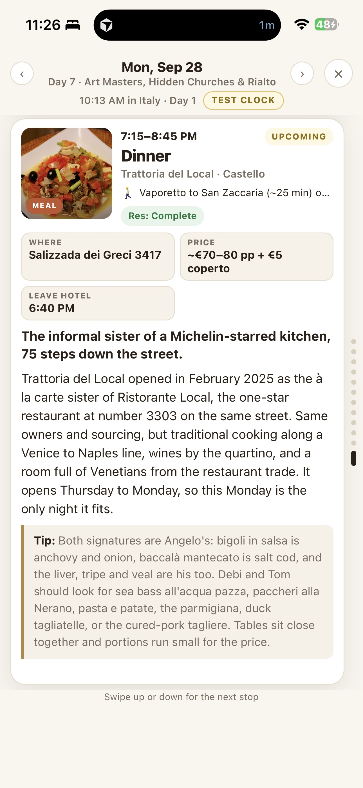
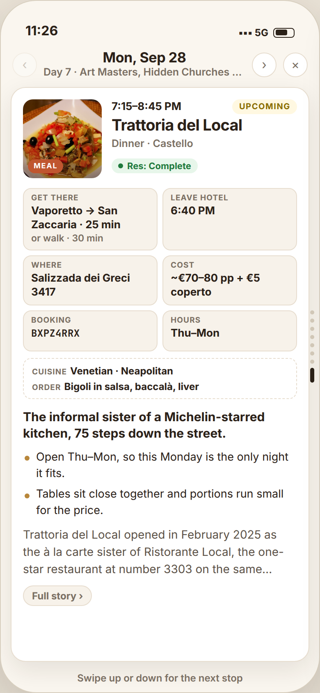
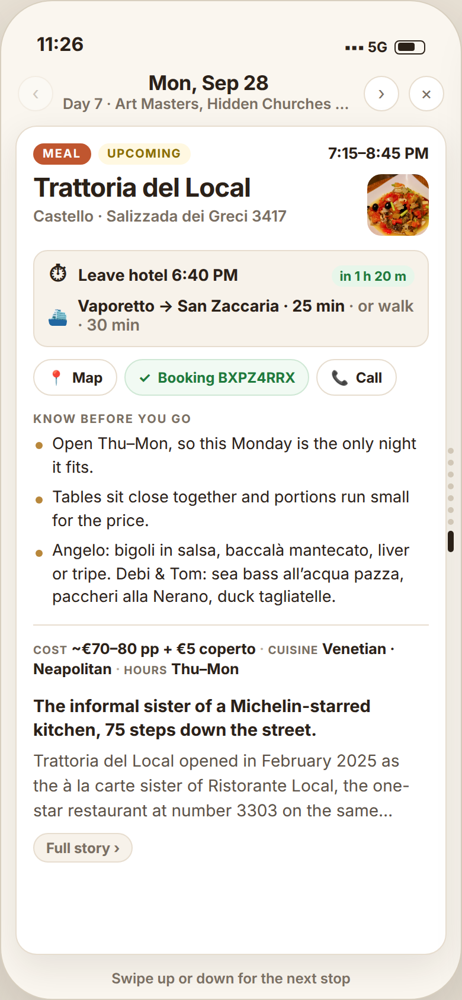
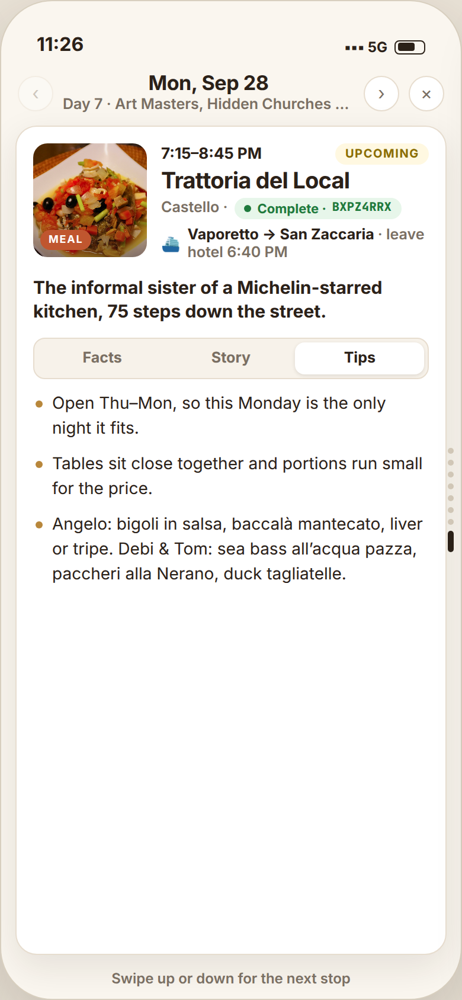

Left: the current Day Mode card. Right: the same data through each proposed template. Note what moves: the restaurant name becomes the title, the transit line stops truncating, the leave-by time appears once, the booking reference is one tap, and the tip content stops being the lowest-contrast text on the card.



